Una especie se considera en peligro de extinción, sea vegetal o animal, cuando todos los miembros con vida de dicha especie están en peligro de desaparecer. Esto se puede deber tanto a la depredación directa sobre la especie como a la desaparición de un recurso del cual depende su vida, tanto por la acción del hombre, debido a cambios en su hábitat, como producto de desastres naturales, o por cambios graduales del clima.
| ANIMALES | AÑO DE EXTINCION |
|---|---|
| Sapo dorado | 1989 |
| Tigre de java | 1994 |
| Dodo | 1980 |
| Mamut | 1990 |
| Bucardo | 2000 |
| Cebra de las llanuras | 1878 |
| Tigre de Tasmania | 1960 |
| Rinoceronte lanudo | 1999 |
| Oso grizzli mexicano | 1964 |
 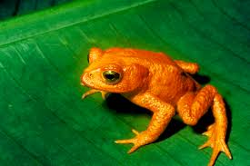
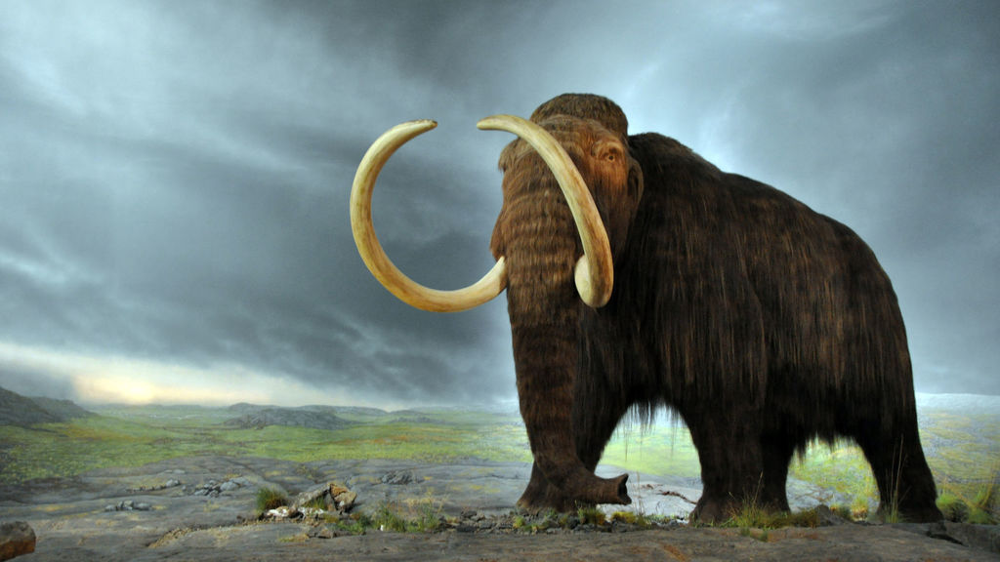
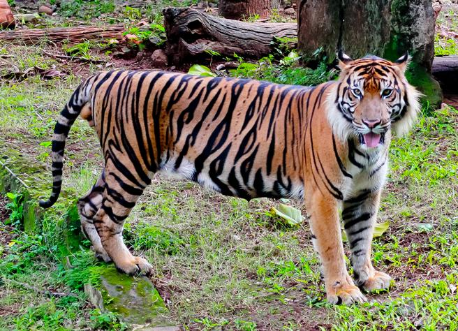
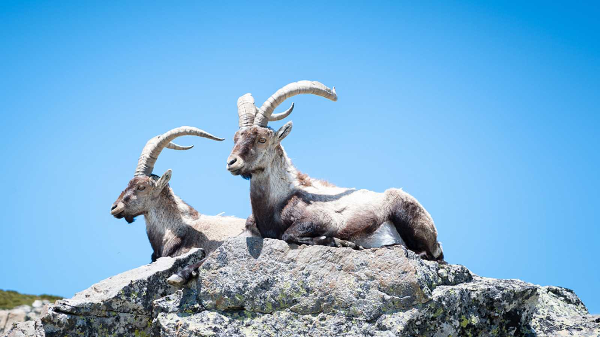
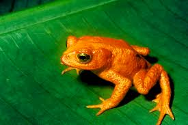
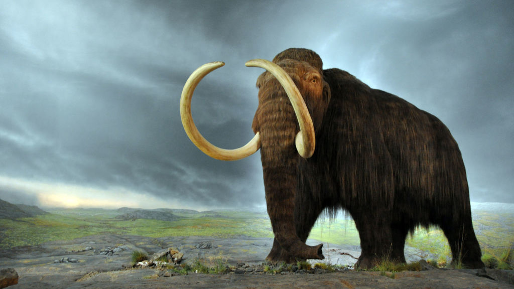
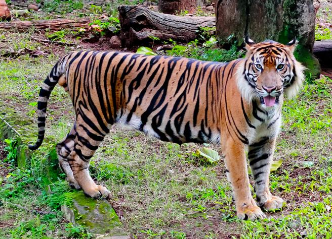
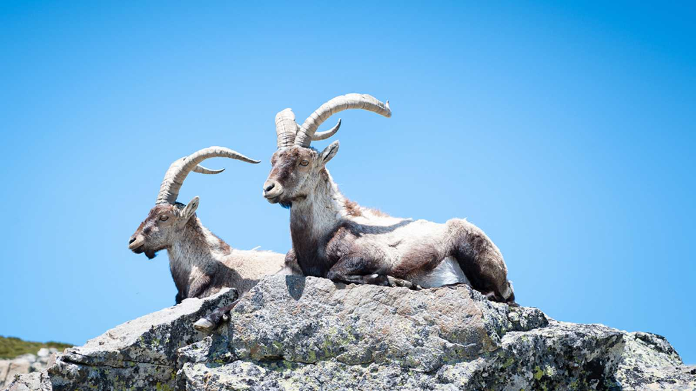
 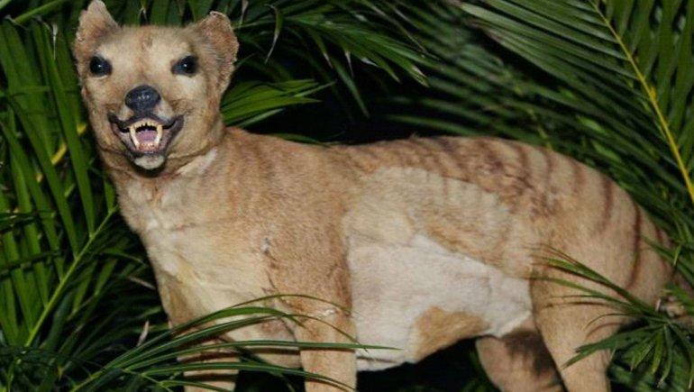
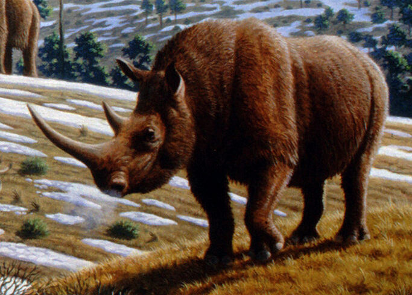
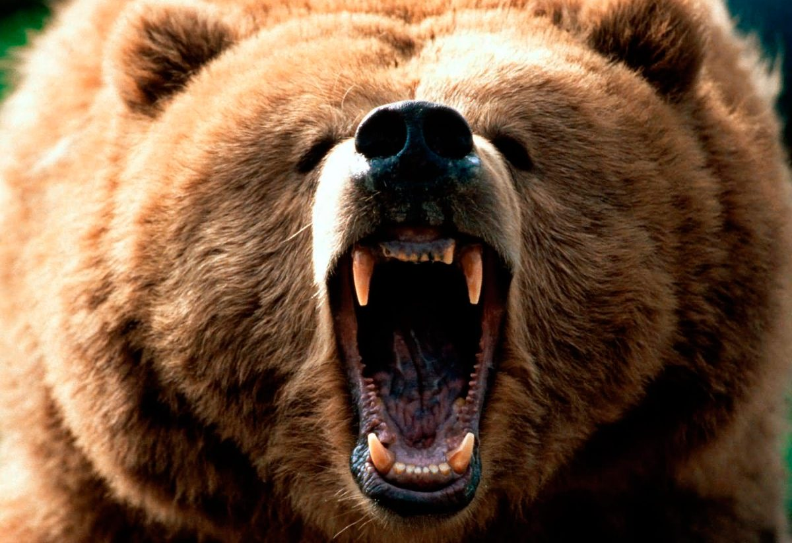
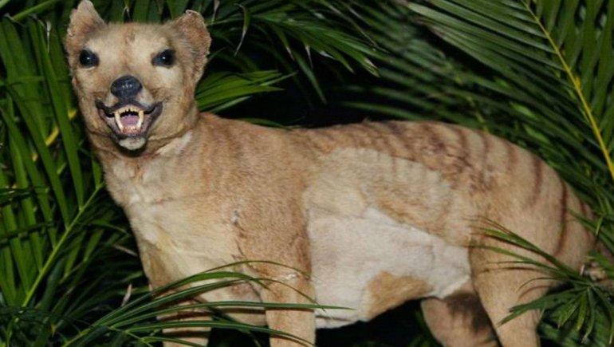
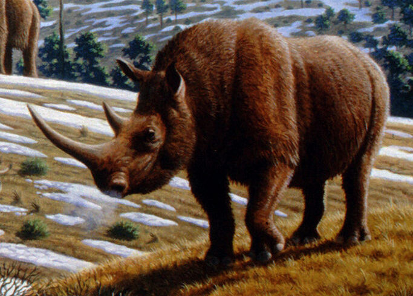
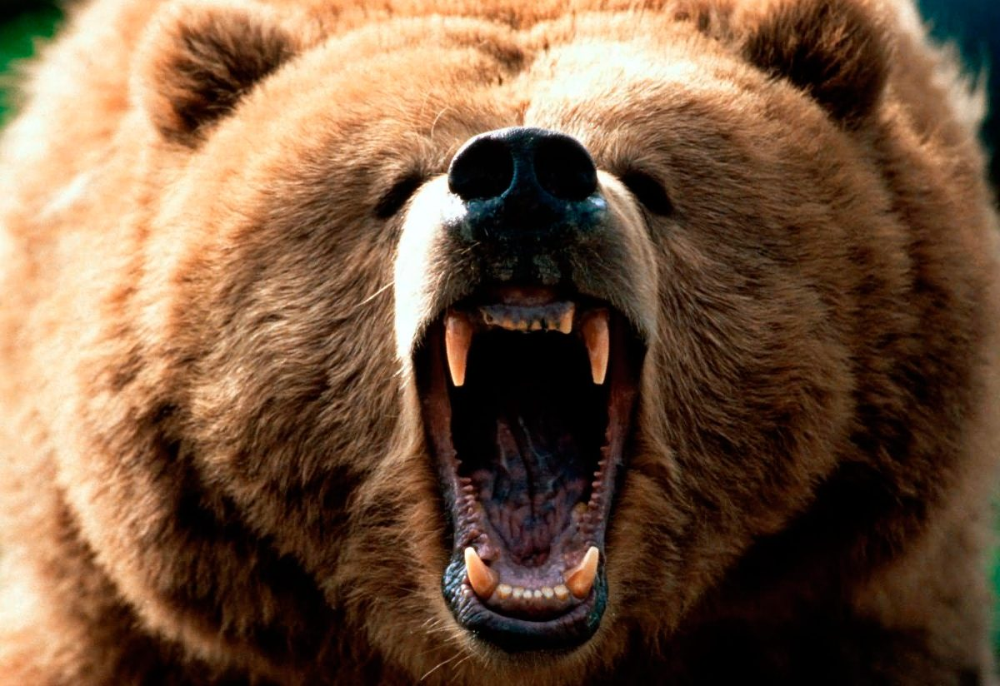